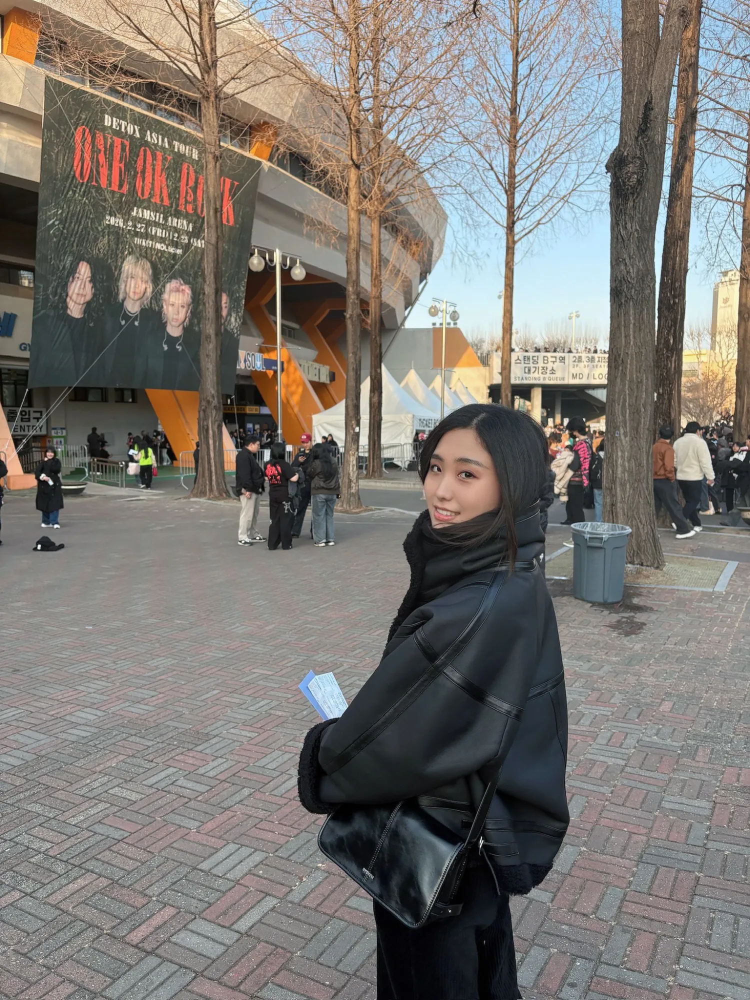

좋아하는 음식
- 마라탕 · 훠궈
- 평양냉면
- 떡볶이
- 겨울엔 붕어빵
- 커피 (요즘 끊는 중이라 참는 중)
// 01 · Profile
논문·특허 경험이 있는 AI 학부연구생이에요. 대학원 대신 실무로 방향을 틀어 SKALA에 왔습니다.
국제학회 게재 1 저널 심사중 1 특허 출원 1
About me
좋아하는 음식(순서 무관), 올해 할 일(우선순위 순), 나를 설명하는 단어들.
Campus life
혼자보다 여럿이 더 잘 맞는 편이에요.
공대 학생회에서 기획팀으로 행사랑 사업을 맡았어요.
GDSC(구글 개발자 학생 클럽)랑 보안 동아리 임원, 스트릿댄스까지.
개발도 춤도 다 했어요.
PC방이랑 방탈출 카페에서 알바도 했어요.
Off the clock


Background
컴퓨터 비전 · 적대적 공격 · 멀티모달을 주로 다뤘어요. 동그라미를 클릭하면 자세히 펼쳐집니다.
전공평점 4.06 / 4.5. 학부 내내 컴퓨터 비전·딥러닝에 관심을 두고 연구실 활동을 병행했어요.
Pose Estimation · Adversarial Attack · Diffusion 연구.
연속 수화 인식(CSLR) 모델 적대적 공격(저널 심사 중), Diffusion 포즈 변환의 디테일 보존(ICTC 2024 게재), 재활 앱 관련 특허 출원 1건.
Multimodal · Rendering · Human Mesh Recovery.
안면 3D Mesh 복원(가상수술 협업), 멀티카메라 색 보정 파이프라인 등. 논문 1편 심사 중.
학부 조교 4과목(자료구조·기계학습 등), 학생회 활동, 성적우수 장학 5회. AI 솔루션 기업 인턴 6개월.
FAQ
ESTJ랑 ESTP를 왔다 갔다 해요. 계획은 세워두는데, 막상 몸이 먼저 나가는 편입니다.
야구 보기, 그리고 걸어 다니면서 맛집 찾아 먹기요. 웬만한 거리는 그냥 걷습니다.
사실 대학원을 포기하고 이 길로 왔어요. 오래 고민한 진로 전환인 만큼, SKALA에서 AI 개발을 제대로 파보려고 합니다.